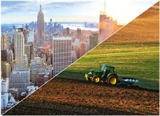

do campo cidade colhendo oportunidedes
A zona rural é de fundamental importância para nossas vidas, pois nela são desenvolvidas as atividades agropecuárias,
como o cultivo de vários alimentos (arroz, feijão, frutas, legumes etc.) e a criação de animais (bois, vacas, porcos, entre outros).
zona rurral e urbana
Zona urbana são áreas municipais com elevado adensamento populacional e formação de habitações muito próximas.
Enquanto, Zona Rural corresponde a um conjunto de atividades primárias (agricultura, pesca, etc)
praticadas em áreas não ocupadas por cidades ou grandes adensamentos populacionais.
